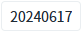

'WebSquare.date.getDay' 메소드를 사용하여 'yyyyMMdd' 형식의 날짜 문자열에서 요일을 반환받는 예제입니다.
yyyyMMdd 형식의 날짜 문자열을 요일 문자열로 반환받기
1
STEP 1: 초기 상태를 확인합니다.
Input에 '20240617'이 기본 값으로 설정된 상태입니다.
Image 1.브라우저(Chrome) 실행 예시

2
STEP 2: '요일 확인하기' 버튼을 클릭합니다.
3
STEP 3: 실행 결과를 확인합니다.
2024년 6월 17일에 해당하는 요일이 반환됩니다.
예제 영역 '로그 확인'의 textarea 또는 브라우저 개발자 도구의 콘솔에 출력된 로그를 확인합니다.
Example 1.Log
[04:38:51] 20240617 : 월요일
4
STEP 4: Input에 날짜를 변경하여 테스트합니다.
yyyyMMdd 형식에 맞는 날짜를 입력합니다.
y: Year
M: Month
d: Day
WebSquare.date.getDay 메소드를 사용하여 스크립트를 작성합니다.
Example 2.Script
// 예제 파일에서는 스크립트 scwin.btn_getDay_onclick에 작성되어 있습니다. // "yyyyMMdd" 형식의 날짜 문자열을 요일 문자열로 반환합니다. var result = WebSquare.date.getDay("20230809");
WebSquare.date.getDay